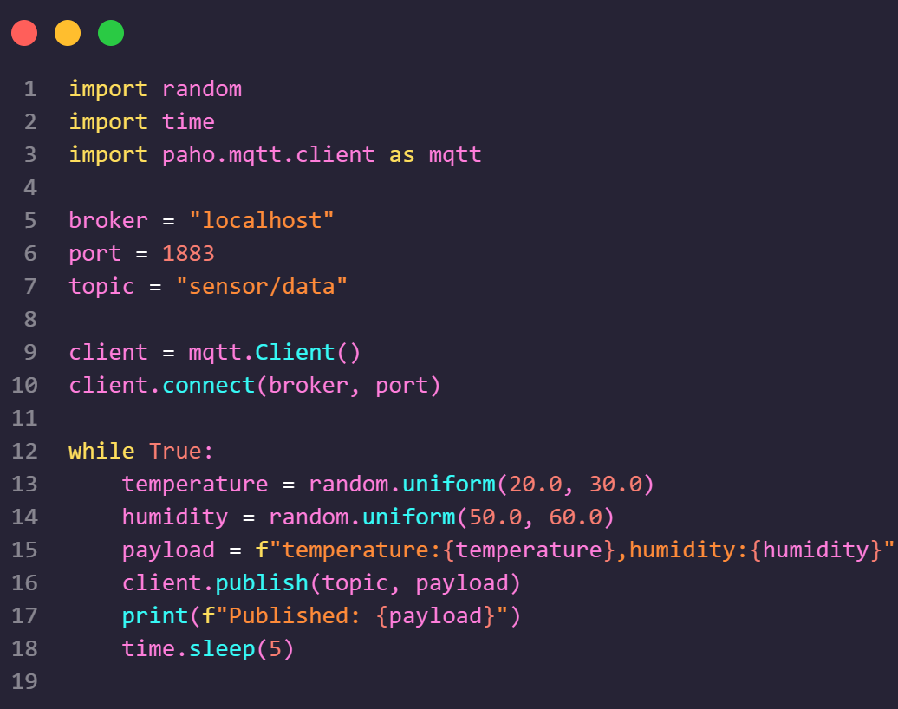

Introduction
This IoT project illustrates how to monitor temperature and humidity using a simulated sensor setup. Key components include:
Python
Used for simulating sensor data and sending it to the MQTT broker.
Mosquitto MQTT
Acts as the MQTT broker for handling real-time data transmission.
InfluxDB
Stores time-series data collected from the sensors.
Grafana
Visualizes the sensor data with interactive dashboards.
Docker
Manages containers for Mosquitto, InfluxDB, and Grafana, ensuring seamless deployment and integration.
This Dockerized project ensures seamless deployment and integration of all services.
Project Structure
Projet_IoT/
├── python_sensor/
│ └── dht_sensor.py
├── docker_config/
│ ├── mosquitto/
│ │ ├── config/
│ │ │ └── mosquitto.conf
│ │ ├── data/
│ │ └── log/
│ ├── influxdb/
│ │ └── data/
│ ├── grafana/
│ │ └── data/
│ └── docker-compose.yml
├── node-red_flows/
└── flows.json
Each directory has specific responsibilities, from sensor scripts to Docker configurations.
Setup
- Clone the repository.
- Ensure Docker and Docker Compose are installed.
- Run
docker-compose up -d.
git clone https://github.com/mrbenboyy/IoT-monitor-temperature-humidity.git

This will start the Mosquitto, InfluxDB, and Grafana services.
Mosquitto
The MQTT broker configuration is available in mosquitto.conf. It is
configured to allow anonymous connections.
listener 1883
allow_anonymous true
InfluxDB
InfluxDB is configured with the following environment variables in the
docker-compose.yml file:
DOCKER_INFLUXDB_INIT_MODE=setup
DOCKER_INFLUXDB_INIT_USERNAME=abdelhakim_benbouanane
DOCKER_INFLUXDB_INIT_PASSWORD=hakim123@
DOCKER_INFLUXDB_INIT_ORG=IoT_Mundia
DOCKER_INFLUXDB_INIT_BUCKET=mybucket
the credentials are:
Username: abdelhakim_benbouanane
Password: hakim123@
Grafana
Grafana is configured to connect to InfluxDB. Use the following settings:
URL: http://influxdb:8086
Organization: IoT_Mundia
Token: admin:admin123
Bucket: mybucket

Node-RED
Node-RED manages data flow and stores processed data in InfluxDB.
Flow Overview
The Node-RED flow consists of the following steps:
- MQTT Input: Receives data from the MQTT broker on the topic
sensor/data. - Parse Data: Parses the incoming payload (temperature and humidity) into a JSON object.
- InfluxDB Output: Stores the parsed data in InfluxDB under the measurement
sensor_data.

Here is the JSON representation of the Node-RED flow:
[
{
"id": "f1b1c1a0.1b1b1",
"type": "mqtt in",
"z": "d1b1c1a0.1b1b1",
"name": "",
"topic": "sensor/data",
"qos": "0",
"datatype": "auto",
"broker": "b1b1c1a0.1b1b1",
"x": 150,
"y": 100,
"wires": [
[
"f2b1c1a0.1b1b1"
]
]
},
{
"id": "f2b1c1a0.1b1b1",
"type": "function",
"z": "d1b1c1a0.1b1b1",
"name": "Parse Data",
"func": "var parts = msg.payload.split(',');\nvar temperature = parseFloat(parts[0].split(':')[1]);\nvar humidity = parseFloat(parts[1].split(':')[1]);\nmsg.payload = {\n temperature: temperature,\n humidity: humidity\n};\nreturn msg;",
"outputs": 1,
"noerr": 0,
"x": 350,
"y": 100,
"wires": [
[
"f3b1c1a0.1b1b1"
]
]
},
{
"id": "f3b1c1a0.1b1b1",
"type": "influxdb out",
"z": "d1b1c1a0.1b1b1",
"influxdb": "c1b1c1a0.1b1b1",
"name": "",
"measurement": "sensor_data",
"x": 550,
"y": 100,
"wires": []
}
]
This flow ensures that the sensor data is correctly processed and stored for visualization in Grafana.
Docker
Docker is a platform that allows you to package applications and their dependencies into lightweight, portable containers. In this project, Docker is used to containerize the following services:
- Mosquitto: The MQTT broker for real-time data transmission.
- InfluxDB: The time-series database for storing sensor data.
- Grafana: The visualization tool for creating interactive dashboards.
Why Use Docker?
Docker simplifies the deployment process by ensuring that all services run in isolated environments with their dependencies. This eliminates the "it works on my machine" problem and ensures consistency across different environments.
docker-compose.yml
The docker-compose.yml file defines the services (containers) that Docker will manage.
Below is an explanation of the services:
services:
mosquitto:
image: eclipse-mosquitto:latest # Mosquitto MQTT broker image
ports:
- "1883:1883" # Exposes port 1883 for MQTT communication
volumes:
- ./mosquitto/config:/mosquitto/config # Mounts config files
- ./mosquitto/data:/mosquitto/data # Mounts data storage
- ./mosquitto/log:/mosquitto/log # Mounts log files
networks:
- iot_network # Connects to the IoT network
influxdb:
image: influxdb:latest # InfluxDB time-series database image
ports:
- "8086:8086" # Exposes port 8086 for InfluxDB access
volumes:
- ./influxdb/data:/var/lib/influxdb2 # Mounts data storage
environment:
- DOCKER_INFLUXDB_INIT_MODE=setup # Initializes InfluxDB
- DOCKER_INFLUXDB_INIT_USERNAME=abdelhakim_benbouanane # Admin username
- DOCKER_INFLUXDB_INIT_PASSWORD=hakim123@ # Admin password
- DOCKER_INFLUXDB_INIT_ORG=IoT_Mundia # Organization name
- DOCKER_INFLUXDB_INIT_BUCKET=mybucket # Default bucket for data
networks:
- iot_network # Connects to the IoT network
grafana:
image: grafana/grafana:latest # Grafana visualization tool image
ports:
- "3000:3000" # Exposes port 3000 for Grafana access
volumes:
- ./grafana/data:/var/lib/grafana # Mounts data storage
environment:
- GF_SECURITY_ADMIN_PASSWORD=admin # Sets Grafana admin password
networks:
- iot_network # Connects to the IoT network
networks:
iot_network:
driver: bridge # Creates a bridge network for communication between containers
This configuration ensures that all services are connected to the same network
(iot_network) and can communicate with each other seamlessly.
Usage
Once the services are running, you can start sending simulated sensor data using the Python script:
import random
import time
import paho.mqtt.client as mqtt
broker = "localhost"
port = 1883
topic = "sensor/data"
client = mqtt.Client()
client.connect(broker, port)
while True:
temperature = random.uniform(20.0, 30.0)
humidity = random.uniform(50.0, 60.0)
payload = f"temperature:{temperature},humidity:{humidity}"
client.publish(topic, payload)
print(f"Published: {payload}")
time.sleep(5)

The data will be sent to the MQTT broker, processed by Node-RED, stored in InfluxDB, and visualized in Grafana.